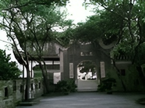
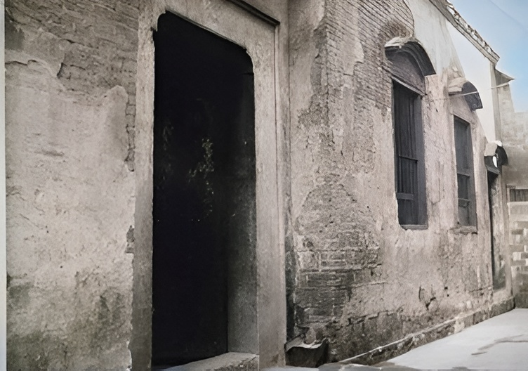
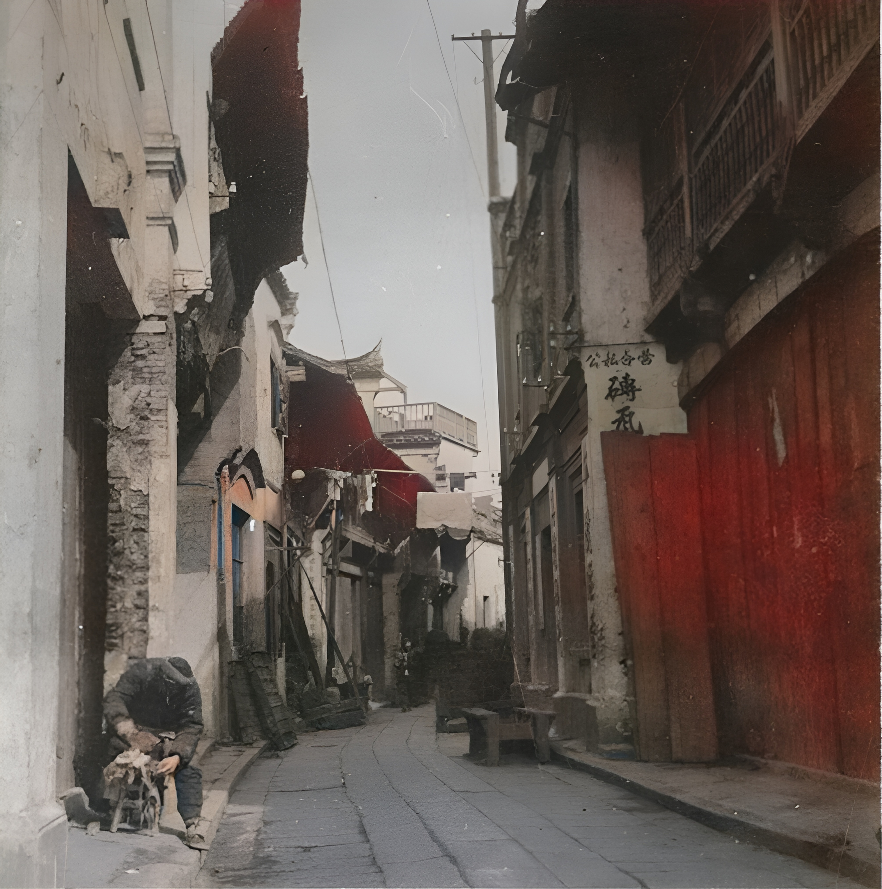
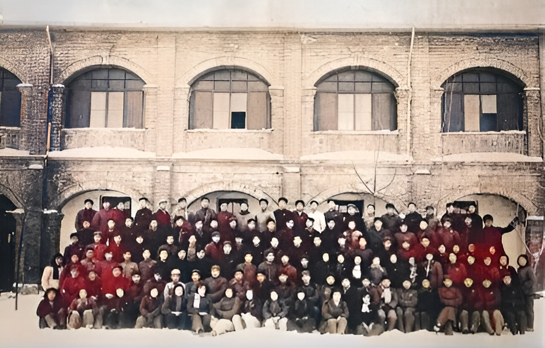
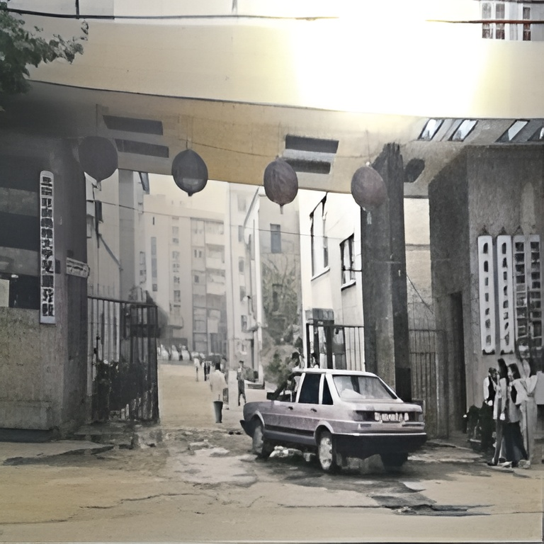
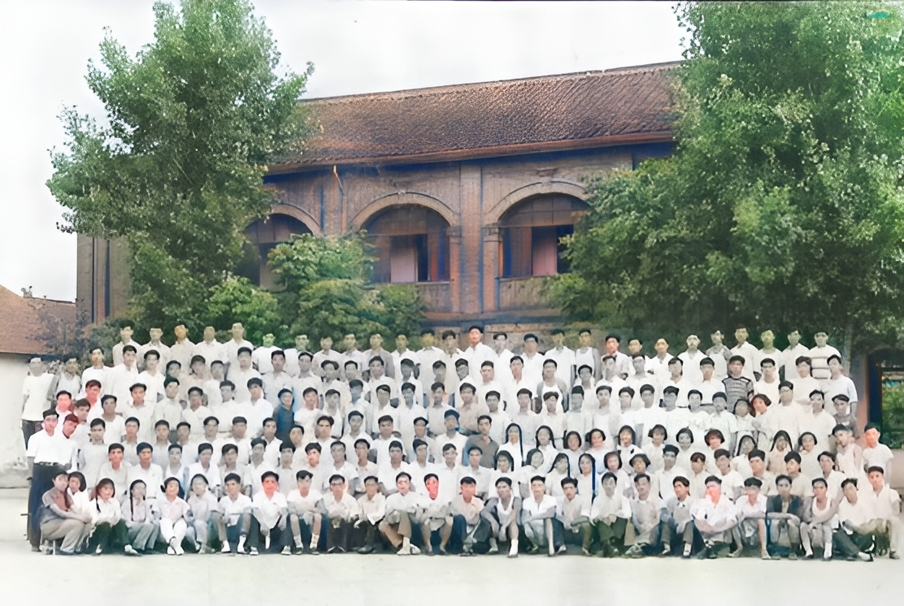
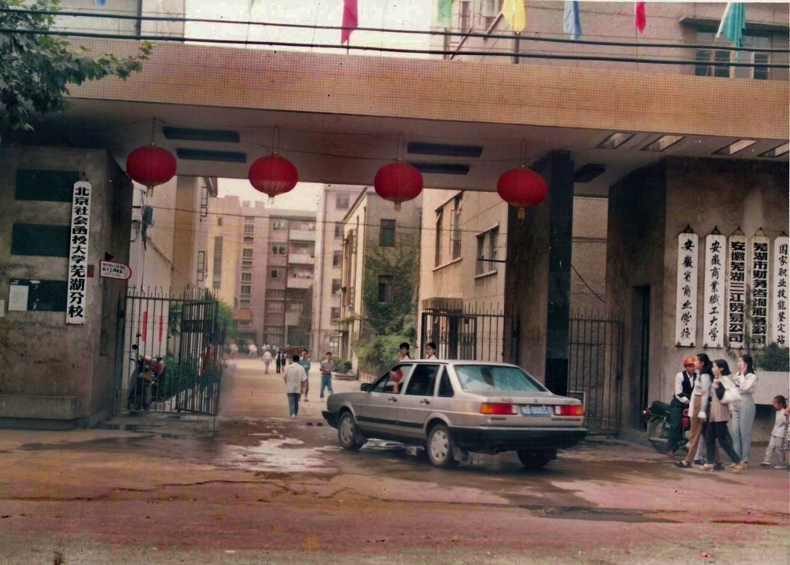
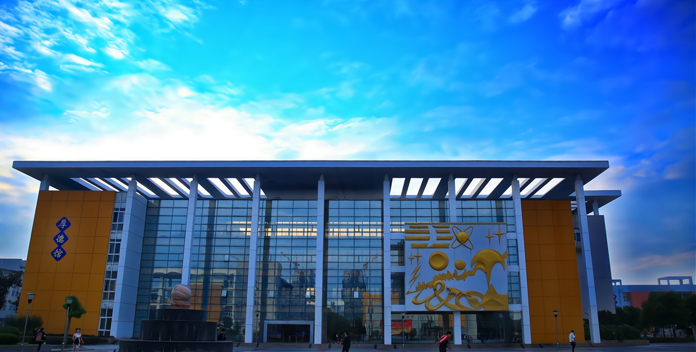

1903
1903年李光炯、卢仲农在湖南长沙创办安徽旅湘公学。

1903年李光炯、卢仲农在湖南长沙创办安徽旅湘公学。

1904年安徽旅湘公学由湖南长沙迁至安徽芜湖，更名为安徽公学。

1904~1919年间，安徽公学停办，1919年复办，改名为省立第一甲种商业学校。

1923年省立第一甲种商业学校更名为省立第一商业学校。

1928年省立第一商业学校与省立第二甲种农业学校合并，更名为省立第二中等职业学校。

1934年省立第二中等职业学校更名为省立芜湖高级农业职业学校。

1938年5月 “七七事变”后 全国进入全面抗击日本侵略的民族解放战争，芜湖大多数学校被迫解散，学校停办。

1942年 学校在立蝗县(今金寨县)重建，改名为安徽省立立煌高级商业职业学校。

1946年学校迁回芜湖，更名为省立芜湖高级商业职业学校。

1949年芜湖高级商业职业学校与芜湖工业学校、芜湖农业学校合并为芜湖市高级职业学校。

1951年芜湖市高级职业学校分设为皖南区芜湖市中级商业技术学校、皖南区芜湖市中级工业技术学校和皖南区芜湖市中级农业技术学校。

1952年皖南区芜湖市中级商业技术学校更名为安徽省芜湖商业学校。

1961年安徽省芜湖商业学校更名为安徽商业学校。

1984年安徽商业职工大学建立(与安徽省商业学校并设)并首届招生

2000年6月安徽商业职工大学和安徽省商业学校合并升格为安徽商贸职业技术学院。